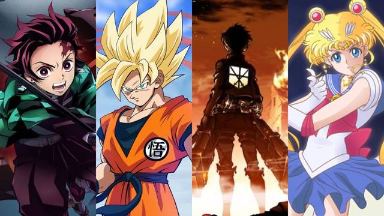
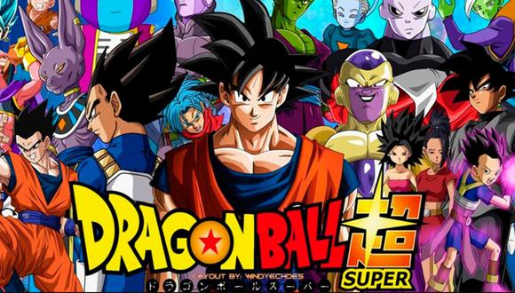

es un término que engloba a la animación tradicional o por computadora de procedencia japonesa.
El anime tradicionalmente es dibujado a mano y al principio los procesos realizados de forma digital eran muy específicos (retoque y montaje). Sin embargo, en la actualidad las tareas más comunes dentro de la producción de una animación, como podría ser el coloreado o los efectos visuales (brillos, sombras, luz ambiental, etc.), se hacen con aplicaciones digitales, que permiten un mayor control sobre el trabajo y ayudan a agilizar la labor de los dibujantes a niveles insospechados en un proceso de animación tradicional. Sus guiones incluyen gran parte de los géneros de ficción y son transmitidos a través de medios audiovisuales (transmisión por televisión, distribución en formatos de vídeo doméstico y películas con audio). La relación del anime con el manga es estrecha, pues históricamente una gran cantidad de series y trabajos de anime se basan en historias de manga populares. Además, también guarda estrecha relación con las novelas visuales.
Dentro de las características notables en el género, se destaca el desarrollo de tramas complejas a lo largo de un cierto número de episodios. Gran parte del anime está estructurado en series de televisión con números de episodios definidos en los cuales se trata una trama específica que puede implicar el trabajo de conceptos complejos.
Toma elementos de la fantasía y lo sobrenatural. También se toma en cuenta las relaciones que tienen los personajes, como amigos o familiares. La mayor parte de las series de anime pueden tener algo emocional y connotaciones ideológicas. Las imágenes pueden crear un fondo adecuado para la transferencia de sus pensamientos emocionales.
Eligiendo una temática de la animación, se empieza la redacción del guion, en virtud de la cual el director, con la asistencia del director de producción, empieza a dar directivas al primer diseño de personajes, el director artístico puede realizar un primer esbozo de los personajes y ambientes. Con lo desarrollado se dirige hacia la creación de guiones, una especie de historieta que sirve de base para el seguimiento de todo el personal, proporciona detalles tales como el número de fotogramas de la escena, los efectos visuales y de los antecedentes necesarios, cámaras, los movimientos de cámara, la dinámica y la composición de las escenas (para la creación de veintiséis minutos de storyboards, normalmente, se requieren alrededor de tres semanas de trabajo). Una vez establecido, bajo la coordinación del director los storyboards, diseño de personajes, el diseño de mecanismos y fondos, se realizan dibujos preliminares, que van a formar el animatic, que es una versión filmada de storyboards necesaria para verificar los tiempos y el ritmo de las escenas, tanto con la incorporación del diálogo y la música que debe tener coherencia con las imágenes y sonidos.
Lo que se ha dicho acerca de la tradición sintoísta también es útil para ilustrar la forma en que el complejo debate sobre la relación entre la naturaleza y la tecnología ha sido desde hace mucho tiempo importante en la sociedad japonesa (aunque también en el mundo entero), y esto se refleja en el anime
Este género narrativo es una mezcla principalmente de las culturas japonesa y occidental. Del género occidental rescata algunos arquetipos de personajes, presentación en capítulos de misma duración y técnicas de animación entre otras cosas. A esto le añade conceptos tradicionales japoneses como el énfasis en la vida cotidiana y el estilo tradicional de dibujo japonés modernizado. Además se pueden presentar otros tipos de mitologías, como la griega, china, escandinava (si se tomaran ejemplos estarían las series de Saint Seiya, Dragon Ball y Matantei Loki respectivamente).
En el camino de los budōka hay una norma que no podrá comenzar sin un guía, ya sea de un padre o un maestro (先生 sensei), poco importa, lo que indica la calle con su comportamiento. En la sociedad japonesa, por lo general es representado por el par senpai-kōhai (tutor-trabajador, veterano-aprendiz), donde el primero es "el que se inició por primera vez, y la segunda, que comenzó más tarde". Este informe, que implica el respeto y la devoción de kōhai hacia el senpai, pero también que son efectivamente en condiciones de asesorar y orientar en la vida, casi puede determinarse en cada contexto social, de la escuela al trabajo, de los deportes a la política, y también, se refleja en el anime, en donde muchas veces los personajes son enseñados por un maestro.
En el sentido del deber presentado en el anime por los japoneses, la verdadera fuerza está en no preocuparse por su propia felicidad personal con el fin de lograr los ideales y cumplir con un deber, es una búsqueda por tratar de buscar un camino interno. Las visitas tienen el deber de pagar una deuda, que puede ser contra el rey, los padres, los antepasados y aun en contra de su nombre, pero en las historias de muchas personas llegan a estar en contra de todo el mundo, el respeto en el que el protagonista, a menudo más allá de sus sentimientos personales y el aislamiento que implica su inevitable diversidad, asume la responsabilidad por el sacrificio propio, que es inspirado por la historia militar de Japón. Sin embargo, la moral es un término que es donde el universo es considerado por japoneses amoral e indiferente.
Otro factor que conduce el anime son las tradiciones, las anécdotas y situaciones que, sin duda, son la ética marcial que es básicamente debido a la complejidad de código de conducta que consiste en el bushidō, la vía de los nobles guerreros. Las historias en el anime, en particular, tienden a combinar los aspectos de bujutsu (武術) y el budō (武道) que proporcionan el derecho capaz de demostrar la lucha, sino también para representar el camino de la moral y de educación protagonista.
Aunque el anime se considera separado de los dibujos animados, este utiliza muchas características aplicadas en las caricaturas como storyboard, actuación de voz, diseño de personajes, entre otras. El anime también tiende a tomar prestados elementos de muchos textos de manga en el fondo, y los paneles de diseños también. Por ejemplo, un opening puede emplear paneles a contar la historia, o para dramatizar una cuestión de efecto humorístico.
El anime es conocido por su animación, la cual es muy particular comparada con la que tienen los dibujos animados occidentales tales como los de Disney. Los estudios en los que se realiza anime han perfeccionado técnicas para utilizar la menor cantidad de cuadros de animación por segundo que sea posible (8 cuadros por segundo), tales como mover o repetir escenarios, imágenes de los personajes que se deslizan por la pantalla, y diálogos que impliquen animar únicamente las bocas mientras que el resto de la pantalla permanece estática.
En el anime el diseño de personajes puede variar de ciertas maneras dependiendo de la época o los dibujantes. Cabe destacar que en el anime son usualmente influenciados más de un tipo de estilo de brocha más que la caligrafía de lápiz.También hay que tomar en cuenta que las características de seres no humanos como animales, robots, monstruos y demonios varían dependiendo el contexto y son muy diferentes a las de los humanos. Los animales pueden tener un dibujo como realmente son, aunque también puede haber híbridos entre humanos. Los robots y monstruos pueden ser de tamaño gigantesco como los rascacielos, aunque también pueden presentar características chibi , de manera cómica.
La banda sonora utilizada en los diferentes formatos suele ser llamada OST como abreviación de Original Soundtrack. Esta puede estar compuesta de: opening, Ending, BGM o Background Music, etc.
Su trama describe las aventuras de Gokū, un guerrero saiyajin, cuyo fin es proteger a la Tierra de otros seres que quieren conquistarla y exterminar a la humanidad. Conforme transcurre la trama, conoce a otros personajes que le ayudan en este propósito.
One Piece es la historia de un chico llamado Monkey D. Luffy, quién se inspiró en Shanks, un pirata que le salvó la vida, para convertirse en el Rey de los Piratas. ... Luffy se convierte en uno de ellos, deseando ser el próximo Rey de los Piratas y se dispone a reunir compañeros de tripulación y comenzar sus aventuras.

La obra narra la historia de un ninja adolescente llamado Naruto Uzumaki, quien aspira a convertirse en Hokage, líder de su aldea, con el propósito de ser reconocido como alguien importante dentro de la aldea y entre sus compañeros.